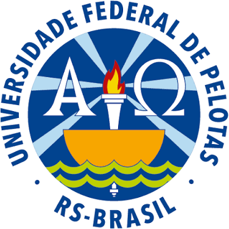
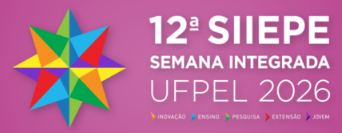
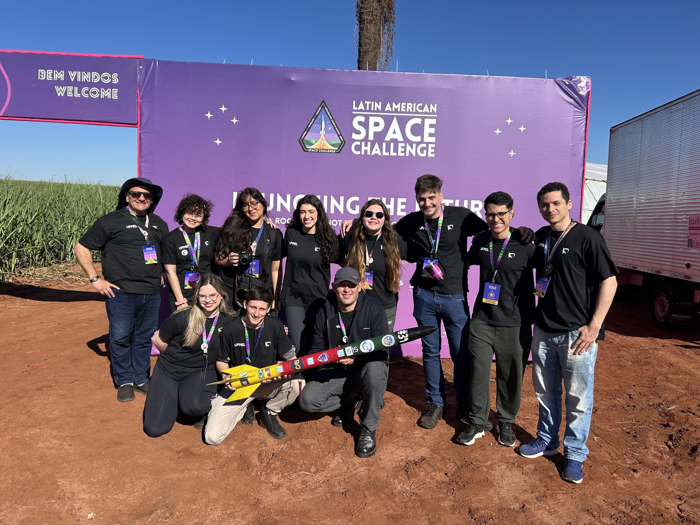
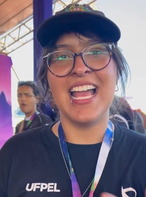
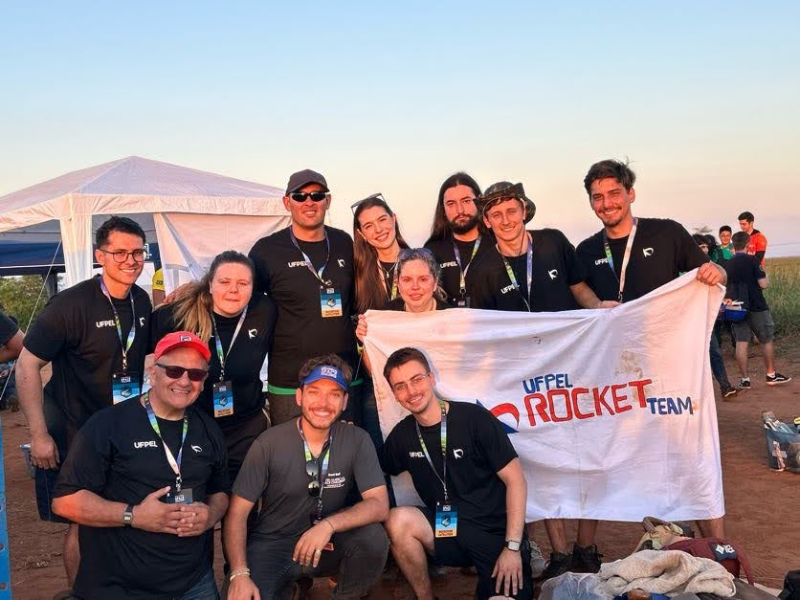
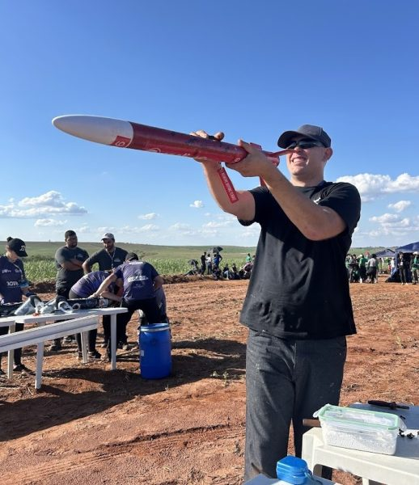
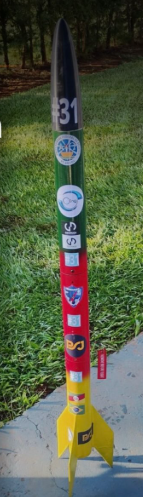
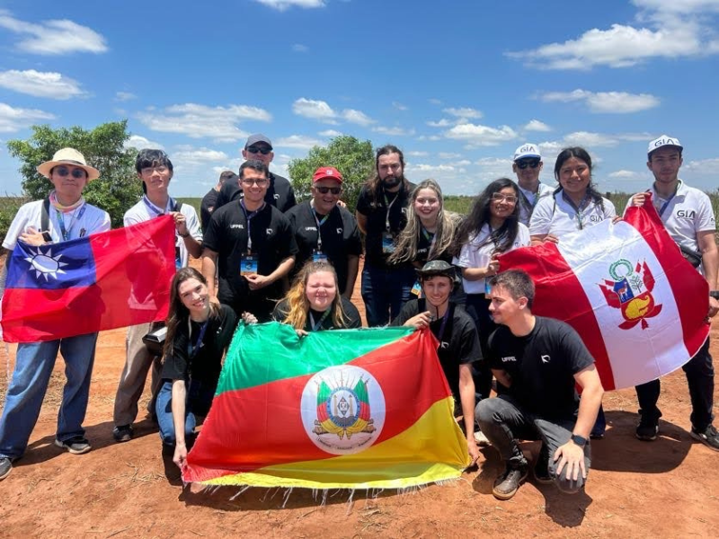

Do Minuano à SIIEPE: o que a UFPel Rocket Team leva ao congresso
Sete trabalhos contam como a equipe projetou, construiu, voou e recuperou o foguete que conquistou o 3º lugar na categoria 500 m da Latin American Space Challenge 2026, e como se organiza e divulga ciência para chegar lá.
- 7trabalhos
- 14autoras e autores
- 10 e 11/11apresentações no Campus Anglo


Uma equipe de extensão que voa
A UFPel Rocket Team é a equipe de foguetemodelismo da Universidade Federal de Pelotas, organizada como projeto de extensão. Criada em 2017, ficou parada entre 2020 e 2021, com a formatura dos integrantes mais antigos e a pandemia, e foi retomada em 2023 com uma nova estrutura de times.
Hoje reúne estudantes de engenharias, Física, Jornalismo, Relações Internacionais, Design, Gestão e outras áreas. Projeta e lança minifoguetes para competições, leva oficinas a escolas e publica conteúdo de divulgação científica.
Na 12ª SIIEPE, a equipe apresenta sete trabalhos. Cinco estão no Congresso de Ensino de Graduação, um no de Iniciação Científica e um no de Extensão e Cultura: ensino, pesquisa e extensão a partir de um mesmo foguete.

Sete setores, um foguete
Quatro setores cuidam dos subsistemas do foguete e três dão suporte à missão. Cada um tem uma liderança que leva as demandas às reuniões de integração.
- Aeroestruturascorpo, ogiva e aletas
- Propulsãopropelente, motores e testes estáticos
- Aviônicasensores, dados e telemetria
- Recuperaçãoparaquedas e ejeção
- Gestãoplanejamento, finanças, inventário
- Relaçõesparcerias e recursos
- Comunicaçãoredes e divulgação

Os trabalhos por eixo da SIIEPE
Toque em um título para ler a síntese.
Os 7 trabalhos
Cada trabalho abre com o objetivo, o que foi feito, o que se encontrou e por que importa. A cor indica o setor da equipe; os PDFs completos estão nos anais da SIIEPE.
Quem assina os trabalhos
Catorze pessoas: onze estudantes, com o curso informado pela equipe, e três professores. O contorno vermelho na foto marca quem apresenta um trabalho; em todos os sete, quem apresenta é o primeiro autor.
A rede de autoria
Os sete trabalhos ficam no anel interno e quem os assina, em volta. A linha vermelha liga cada trabalho a quem o apresenta, que é também o primeiro autor. Passe o mouse ou toque em uma pessoa para ver suas conexões; toque em um trabalho para abrir a síntese.
Arraste a rede para os lados para ver todos os nomes.
A equipe inteira
Estudantes da UFPel Rocket Team, com seus cursos, e os professores do projeto. Nem todos assinam trabalhos nesta SIIEPE, mas todos fazem a missão acontecer.
| Nome | Curso ou área |
|---|
Quando e onde apresentamos
Todas as sessões são no Campus Anglo. A grade vem da programação oficial do CEG, do CIC e do CEC e pode mudar; confirme perto da data. Use “Salvar na agenda” para levar a sessão para o seu calendário.
3º lugar na categoria 500 m da LASC 2026
A 7ª Latin American Space Challenge aconteceu de 2 a 5 de setembro de 2026 no Sugarcane Launch Range, em Iacanga (SP), com 102 missões no Rocket Challenge. A missão Minuano disputou a categoria de apogeu 500 m com motor de propelente sólido.
Pódio da categoria 500 m
738,43 pontos
768,65 pontos
647,31 pontos

De 2025 para 2026

2025, missão Netuno
8ºna categoria 500 m, 32º no geral. A placa de aviônica se desligou em voo e a recuperação virou prioridade do ciclo seguinte.
2026, missão Minuano
3ºna categoria 500 m, 16º no geral. Novo setor de Recuperação, aviônica refeita e primeiro motor KNSB da equipe.


Onde estão os pontos, e quais trabalhos falam deles
A nota da LASC vai muito além do voo: soma acompanhamento ao longo do ano, documentação, divulgação, inspeção do foguete e operação de lançamento. Cada linha mostra a nota da Minuano diante do máximo (ou da melhor nota da edição) e os trabalhos da SIIEPE que tratam daquela parte da missão.
Barra vermelha: nota máxima atingida. Fonte: planilha oficial “2026 LASC Final Scoreboard”, aba Rocket Challenge, conforme a análise do repositório UFPel-Rocket/info.
Obrigado a quem fez o Minuano voar
Parte dos materiais da equipe vem de doações e do apoio de empresas e instituições; o restante, de contribuições dos próprios integrantes e de ações de arrecadação. Estes são os patrocinadores e apoiadores da temporada 2026.
Realização
Como esta página foi feita
As sínteses vêm dos textos completos dos sete resumos expandidos da UFPel Rocket Team aprovados na 12ª SIIEPE. Datas, horários, salas e links dos PDFs vêm da planilha de trabalhos do orientador, montada a partir da programação oficial do CEG, do CIC e do CEC. Os cursos vêm da lista atualizada de membros da equipe.
Os resultados da LASC 2026 vêm da planilha oficial de pontuação do Rocket Challenge e da classificação da categoria 500 m, ambas reunidas no repositório da equipe.
- Repositório UFPel-Rocket/info, com a análise da LASC 2026 e o panorama da categoria 500 m.
- Placar oficial da LASC, aba Rocket Challenge.
- Conzatti, Cavagnoli e Rodriguez (2023), sobre a estruturação da UFPel Rocket Team 2.0.
Horários sujeitos a alteração pela organização da SIIEPE.